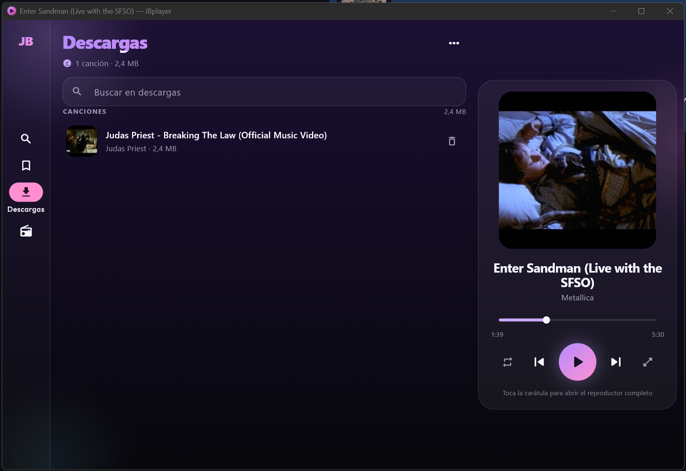
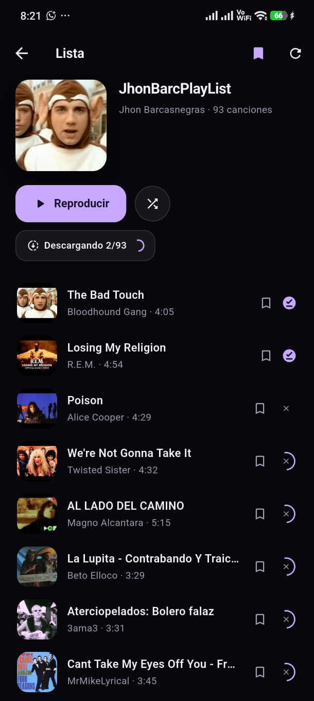
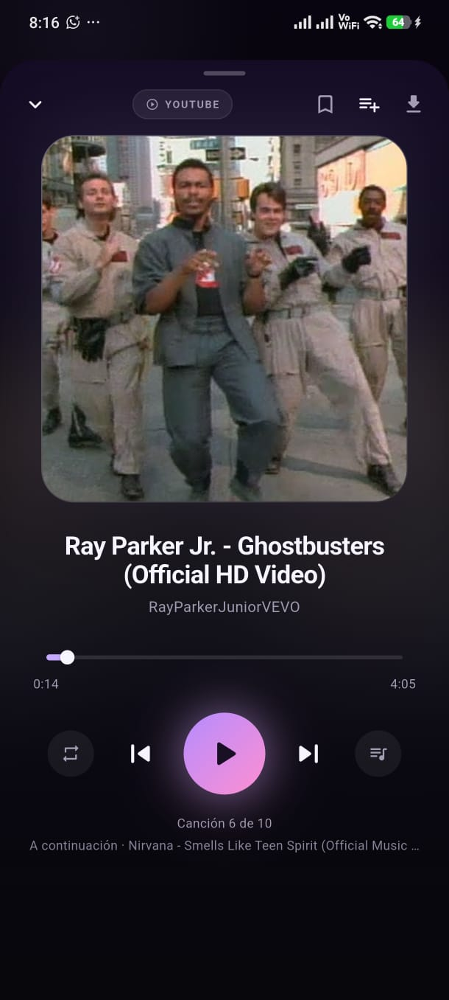

Busca en YouTube
Canciones y listas completas, con cola, repetir y barra de progreso.
Música de YouTube y radio en vivo en Android y Windows. Descarga para escuchar sin conexión. Sin cuenta, sin anuncios, sin telemetría.
Android 7+ · Windows 10/11 (64 bits) · Gratis

La misma app, pensada para el bolsillo.


Un reproductor minimalista que también guarda tu música.
Canciones y listas completas, con cola, repetir y barra de progreso.
Descarga canciones o listas enteras con su carátula y llévalas contigo.
Emisoras incluidas, búsqueda por género y tus propias URLs.
Segundo plano con controles del sistema, widget en Android y bandeja en Windows.
Dos minutos y ni un solo registro.
1Descarga el APK desde Releases.
2Ábrelo y permite instalar desde orígenes desconocidos.
3Instala y listo.
1Descarga el instalador desde Releases.
2Ejecútalo. No pide administrador.
3Abre JBplayer desde el menú Inicio.